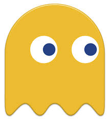

Clyde
El fantasma amarillo se hace llamar Clyde, aunque su verdadero nombre es Pokey.Él no persigue a Pac-Man, sino que deambula sin una ruta específica

Inky
El fantasma azul se hace llamar Inky. Su verdadero nombre, Bashful. No es tan rápido como Blinky pero actúa de manera errática así que es difícil predecir cómo va a reaccionar.

Pinky
El fantasma azul se hace llamar Pinky. Su verdadero nombre, Speedy. Rodea los obstáculos al contrario de las manecillas del reloj.

Blinky
El fantasma rojo se llama Blinky. Su verdadero nombre Shadow. Después de que Pac-Man coma cierta cantidad de puntos, su velocidad incrementa considerablemente.